Crafting robust system architectures, custom tools, and engaging gameplay mechanics.Diseño arquitecturas de sistemas robustas, herramientas a medida y mecánicas de gameplay atractivas.
25 Nov · YearAño1Mean tempTemp. media–Point at a lot
What I'm building now: a farming game and simulator on real data. These are real lots from Pergamino, Argentina, going through the seasons. How it worksLo que estoy construyendo ahora: un juego y simulador agropecuario con datos reales. Estos son lotes reales de Pergamino, Argentina, atravesando las estaciones. Cómo funciona
Assets /ProjectsProyectos
About MeSobre mí
I am a Software and Video Game Developer. My core focus is on system architecture, object-oriented programming, editor tool development, and creating scalable, maintainable code.Soy desarrollador de software y de videojuegos. Mi foco principal está en la arquitectura de sistemas, la programación orientada a objetos, el desarrollo de herramientas de editor y la creación de código escalable y mantenible.
GameplayMechanics for online & offline gamesMecánicas para juegos online y offline
ToolsHerramientasEditor extensions that speed teams upExtensiones de editor que aceleran a los equipos
Game AIIA de juegosPerception, agents, neural networksPercepción, agentes, redes neuronales
ArchitectureArquitecturaScalable, maintainable systemsSistemas escalables y mantenibles
Farming Sim · Unity 6 · In developmentSimulador agrícola · Unity 6 · En desarrollo
AgroLife
A farming game and simulator built on real weather, soils, yields and costs, to learn how a crop campaign works by playing one.Un juego y simulador agropecuario construido con clima, suelos, rindes y costos reales, para aprender cómo funciona una campaña agrícola jugándola.
Try itPruébalo
25 Nov · YearAño1Mean tempTemp. media–Point at a lot
Real lots from Pergamino, Buenos Aires: a slice of the 3,477 the game's data pipeline cut out of the road network. They're farmed the way the game farms your neighbours: on 1 May each lot takes the next crop of the rotation (maize, soybean, wheat followed by second soybean) on its typical sowing date, and crops develop by growing degree-days under weather drawn from the generator's parameters for Pergamino. The productivity index layer comes from INTA's soil charts.Lotes reales de Pergamino, Buenos Aires: un recorte de los 3.477 que el pipeline de datos del juego sacó de la red de caminos. Se trabajan como el juego trabaja a tus vecinos: el 1 de mayo cada lote toma el siguiente cultivo de la rotación (maíz, soja, trigo seguido de soja de segunda) en su fecha de siembra típica, y los cultivos se desarrollan por grados-día con un clima sorteado a partir de los parámetros del generador para Pergamino. La capa de índice de productividad sale de las cartas de suelo del INTA.
The problemEl problema
Agronomy students learn gross margins, break-even yields, water budgets and pest damage thresholds on paper. They rarely get to run a whole campaign and see why a yield came out the way it did.Los estudiantes de agronomía aprenden margen bruto, rinde de indiferencia, balances hídricos y umbrales de daño por plagas en el papel. Pocas veces pueden llevar adelante una campaña entera y ver por qué un rinde dio como dio.
What I builtQué construí
A Unity 2D game on top of a simulation core written in plain C#, with no Unity references, so it can be tested and calibrated without a scene. Version 1 covers farming in one region, Pergamino, in Argentina's core farming zone: buy or lease land, plan each lot's crop, sowing date, genetics and fertiliser against a live budget, decide whether to spray when a pest crosses its threshold, then sell the grain or keep it in silo bags. Every harvest comes with a report that breaks the yield down by cause.Un juego 2D en Unity montado sobre un núcleo de simulación escrito en C# puro, sin referencias a Unity, de modo que se puede testear y calibrar sin una escena. La versión 1 cubre la agricultura en una región, Pergamino, en plena zona núcleo de Argentina: comprar o arrendar tierra, planificar el cultivo, la fecha de siembra, la genética y la fertilización de cada lote contra un presupuesto en vivo, decidir si aplicar cuando una plaga supera su umbral, y después vender el grano o guardarlo en silobolsa. Cada cosecha viene con un reporte que desglosa el rinde por causa.
It's aimed at agrotechnical-school and agronomy students, so it uses the real technical vocabulary, with an optional glossary, instead of simplifying it away.Está pensado para estudiantes de escuelas agrotécnicas y de agronomía, por eso usa el vocabulario técnico real, con un glosario opcional, en lugar de simplificarlo.
How it worksCómo funciona
Data pipelinePipeline de datosPython scripts build the region from open data: lots cut from OpenStreetMap's road network, soil texture and water holding capacity from SoilGrids, the productivity index from INTA's soil charts, and each lot's road distance to the nearest grain elevator.Scripts de Python arman la región a partir de datos abiertos: lotes recortados de la red de caminos de OpenStreetMap, textura y capacidad de retención de agua del suelo desde SoilGrids, el índice de productividad de las cartas de suelo del INTA y la distancia por camino de cada lote al acopio más cercano.
WeatherClimaA WGEN-type generator fitted to NASA POWER data from 1991 to 2025: a Markov chain picks the wet days, a gamma distribution the rain, AR(1) anomalies the temperatures. Each campaign draws an El Niño, neutral or La Niña phase, and the forecast the player sees is right 70% of the time.Un generador tipo WGEN ajustado con datos de NASA POWER de 1991 a 2025: una cadena de Markov decide los días lluviosos, una distribución gamma la lluvia y anomalías AR(1) las temperaturas. Cada campaña sortea una fase El Niño, neutra o La Niña, y el pronóstico que ve el jugador acierta el 70 % de las veces.
Soil and cropsSuelo y cultivosA daily water bucket per lot (Hargreaves evapotranspiration, Saxton & Rawls drainage), nitrogen and phosphorus balances, and crop stages driven by growing degree-days.Un balde de agua diario por lote (evapotranspiración de Hargreaves, drenaje de Saxton & Rawls), balances de nitrógeno y fósforo, y etapas del cultivo regidas por grados-día.
YieldRindePotential yield, scaled by the lot's productivity index, minus losses from sowing date, water, waterlogging, temperature, nitrogen, phosphorus and pests.El rinde potencial, escalado por el índice de productividad del lote, menos las pérdidas por fecha de siembra, agua, anegamiento, temperatura, nitrógeno, fósforo y plagas.
DeterminismDeterminismoA PCG32 generator with a separate stream for each subsystem, so the same seed gives the same weather whatever the player does.Un generador PCG32 con un flujo separado para cada subsistema, así la misma semilla da el mismo clima haga lo que haga el jugador.
Technical highlightsAspectos técnicos
Every harvest explains itself. Losses are taken in a fixed order, each one from what the previous ones left, so the report's waterfall always adds up to the real yield.Cada cosecha se explica sola. Las pérdidas se restan en un orden fijo, cada una sobre lo que dejaron las anteriores, por eso la escalera del reporte siempre suma el rinde real.
ModeloCultivo.cs · translated from Spanish
public static Cascada CalcularCascada(EstadoCultivo e, CultivoParams c)
{
var p = PerdidasActuales(e, c);
var k = new Cascada { PotencialQqHa = e.RindeAlcanzableQqHa };
double resto = k.PotencialQqHa;
double Quitar(double fraccion) { double q = resto * fraccion; resto -= q; return q; }
k.FechaQq = Quitar(p.Fecha);
k.AguaQq = Quitar(p.Agua);
k.AnegamientoQq = Quitar(p.Anegamiento);
k.TemperaturaQq = Quitar(p.Temperatura);
k.NitrogenoQq = Quitar(p.Nitrogeno);
k.FosforoQq = Quitar(p.Fosforo);
k.PlagasQq = Quitar(p.Plagas);
k.RealQqHa = resto;
return k;
}
public static Waterfall ComputeWaterfall(CropState e, CropParams c)
{
var p = CurrentLosses(e, c);
var k = new Waterfall { PotentialQuintalsHa = e.AttainableYieldQuintalsHa };
double remaining = k.PotentialQuintalsHa;
double Deduct(double fraction) { double q = remaining * fraction; remaining -= q; return q; }
k.SowingDateQuintals = Deduct(p.SowingDate);
k.WaterQuintals = Deduct(p.Water);
k.WaterloggingQuintals = Deduct(p.Waterlogging);
k.TemperatureQuintals = Deduct(p.Temperature);
k.NitrogenQuintals = Deduct(p.Nitrogen);
k.PhosphorusQuintals = Deduct(p.Phosphorus);
k.PestsQuintals = Deduct(p.Pests);
k.ActualQuintalsHa = remaining;
return k;
}
MediaGalería
None (Texture2D)
None (Texture2D)
None (Texture2D)
What I learnedQué aprendí
// TODO: what you learned and what you'd do differently
Puzzle Game · Unity 6 · In developmentJuego de puzles · Unity 6 · En desarrollo
CableMess
A cozy first-person puzzle about untangling your clients' cables: every connector fits only its own port, and every cable is only so long.Un puzle cozy en primera persona sobre ordenar los cables de tus clientes: cada conector entra solo en su puerto y cada cable tiene un largo limitado.
Try itPruébalo
A top-down 2D take on the game's cable rules, on schematic plans of its first two levels. Click a cable end to pick it up, then a clip to hang it, a port to plug it, or the floor to drop it. As in the game, a cable is only so long ("Too short"), a connector only fits its own port, and a clip pins the cable at its distance × 1.05 from the last pin. Point at a port (or tap it) to read its tape; the LED says whether it is plugged where the tape says, and the router in the apartment only lights up once it has power. Press Verify when you think every port is right. The tidy seal is optional: hang the long cables from clips.Una versión 2D cenital de las reglas de cables del juego, sobre planos esquemáticos de sus dos primeros niveles. Haz clic en la punta de un cable para tomarla, y luego en un clip para colgarlo, en un puerto para enchufarlo o en el piso para soltarlo. Como en el juego, un cable tiene un largo limitado («No alcanza»), un conector entra solo en su puerto y un clip fija el cable a su distancia × 1,05 desde el último punto fijo. Apunta a un puerto (o tócalo) para leer su etiqueta; el LED indica si está enchufado donde dice la etiqueta, y el router del departamento solo se enciende cuando tiene alimentación. Pulsa Verificar cuando creas que todos los puertos están bien. El sello prolijo es opcional: cuelga los cables largos de los clips.
The problemEl problema
Putting a mess in order is satisfying, but a game about it has to make handling cables feel good without turning into a fight with physics. Cables should move while you handle them, stay put when you let go, and always be solvable, however tidy the player decides to be.Poner orden en el caos es satisfactorio, pero un juego sobre eso tiene que lograr que manipular cables se sienta bien sin convertirse en una pelea con la física. Los cables deben moverse mientras los manipulas, quedarse quietos cuando los sueltas y tener siempre solución, sin importar qué tan prolijo decida ser el jugador.
What I builtQué construí
A first-person puzzle in Unity 6 (URP, Input System). You are an independent IT technician who takes contracts to tidy clients' cable chaos. Each level is a client, from a studio flat to a server room, and you win when every cable is plugged where its label says. Being tidy is optional: the game recognises it with seals but never asks for it, and there is no timer. So far there are five levels: studio flat, apartment, small office, small business and server room.Un puzle en primera persona en Unity 6 (URP, Input System). Eres un técnico de IT independiente que acepta contratos para ordenar el caos de cables de sus clientes. Cada nivel es un cliente, desde un monoambiente hasta una sala de servidores, y ganas cuando todos los cables están enchufados donde dice su etiqueta. Ser prolijo es opcional: el juego lo reconoce con sellos pero nunca lo exige, y no hay ningún temporizador. Por ahora hay cinco niveles: monoambiente, departamento, oficina chica, PyME y sala de servidores.
How it worksCómo funciona
CablesCablesEach cable is a chain of 10 cm links, simulated while you handle it and for a moment after you let go. Then it falls asleep and stays put, so a level full of cables costs almost nothing at rest.Cada cable es una cadena de eslabones de 10 cm, que se simula mientras lo manipulas y un momento después de soltarlo. Después se duerme y queda quieto, así que un nivel lleno de cables casi no cuesta nada en reposo.
Pins and clipsPuntos fijos y clipsA cable's ends and the clips it hangs from are pins. Clicking a clip pins the link at distance × 1.05 from the previous pin, so a cable can never be hung where it can't reach.Las puntas de un cable y los clips de los que cuelga son puntos fijos. Al hacer clic en un clip se fija el eslabón a una distancia × 1,05 del punto fijo anterior, así que un cable nunca puede colgarse donde no alcanza.
RulesReglasEvery connector has a type and every cable a maximum length. Aiming at a port or a clip gives a verdict (OK, too short, wrong type, taken) that the hand shows on screen before you commit.Cada conector tiene un tipo y cada cable un largo máximo. Apuntar a un puerto o a un clip da un veredicto (OK, no alcanza, tipo incorrecto, ocupado) que la mano muestra en pantalla antes de que te comprometas.
VerificationVerificaciónEvery port carries a label and where its cable must go. Its LED is green when it is plugged where the tape says, red when it is not and off without a cable or power. A Verify button checks the whole level at once.Cada puerto lleva una etiqueta y el destino de su cable. Su LED es verde si está enchufado donde dice la cinta, rojo si no, y está apagado sin cable o sin alimentación. Un botón de verificar comprueba el nivel entero de una vez.
Levels as codeNiveles como códigoEach level is generated by an editor builder from prefabs, with a connection plan and a cable stock sized so every connection fits. After building one I plug everything through the game's own API in Play Mode until it reports victory.Cada nivel lo genera un builder de editor a partir de prefabs, con un plan de conexiones y un stock de cables dimensionado para que cada conexión entre. Después de construir uno enchufo todo con la propia API del juego en Play Mode hasta que informa la victoria.
Technical highlightsAspectos técnicos
The placement rules live in plain C# classes with no scene dependency, so they have EditMode tests. This is the verdict for plugging a cable into a port, in the same order the demo above applies it: wrong type first, then taken, then whether the cable still reaches from its nearest pin.Las reglas de colocación viven en clases de C# puro, sin depender de la escena, por eso tienen tests de EditMode. Este es el veredicto de enchufar un cable en un puerto, en el mismo orden que lo aplica la demo de arriba: primero el tipo incorrecto, después si está ocupado y por último si el cable todavía alcanza desde su punto fijo más cercano.
CableRoute.cs · código traducido
public Verdict EvaluatePort(Vector3 attachPoint, ConnectorType cableType, ConnectorType portType, bool portFree)
{
if (cableType != portType) return Verdict.WrongType;
if (!portFree) return Verdict.Occupied;
int anchor = Anchor;
if (anchor >= 0 && Vector3.Distance(chain.PinTargets[anchor], attachPoint) > RemainingLength) return Verdict.TooShort;
return Verdict.Ok;
}
public Veredicto EvaluarPuerto(Vector3 puntoDeEnchufe, TipoConector tipoCable, TipoConector tipoPuerto, bool puertoLibre)
{
if (tipoCable != tipoPuerto) return Veredicto.TipoIncorrecto;
if (!puertoLibre) return Veredicto.Ocupado;
int ancla = Ancla;
if (ancla >= 0 && Vector3.Distance(cadena.ObjetivosDePin[ancla], puntoDeEnchufe) > LargoRestante) return Veredicto.NoAlcanza;
return Veredicto.Ok;
}
MediaGalería
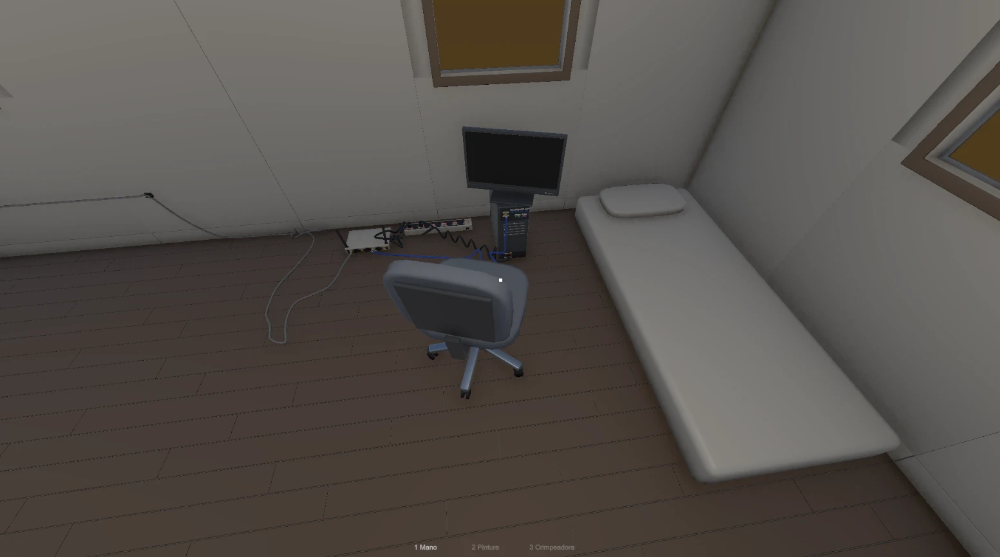
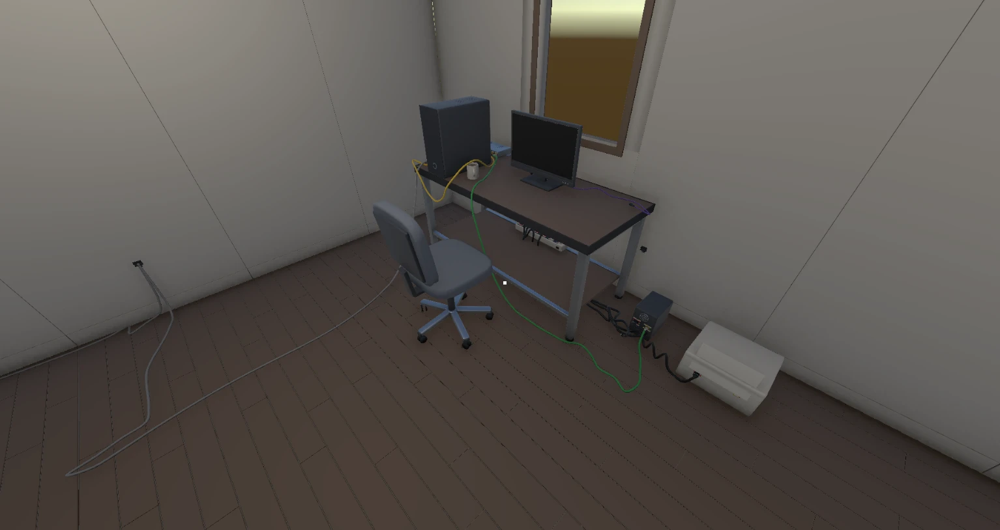
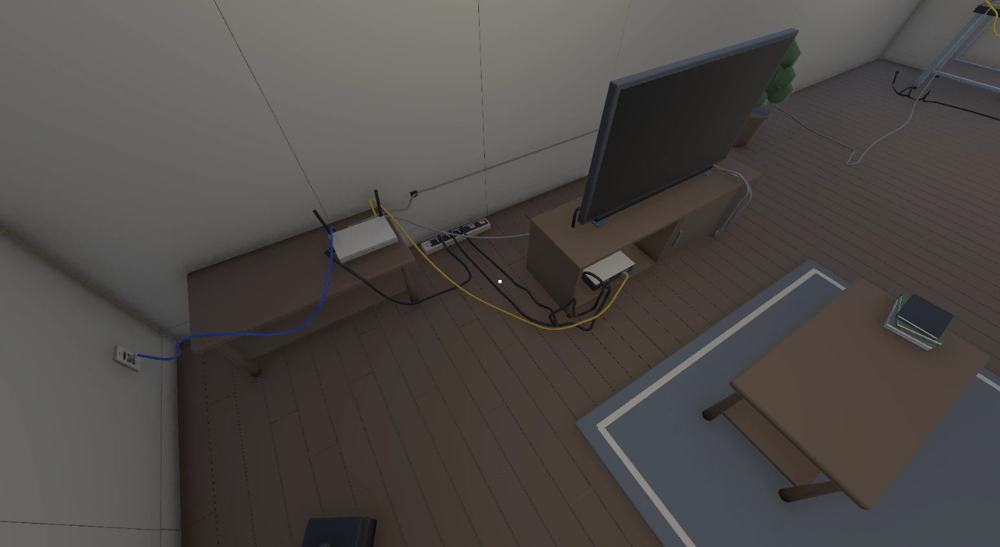
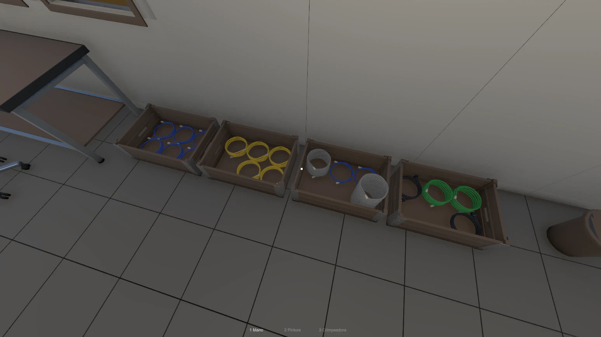
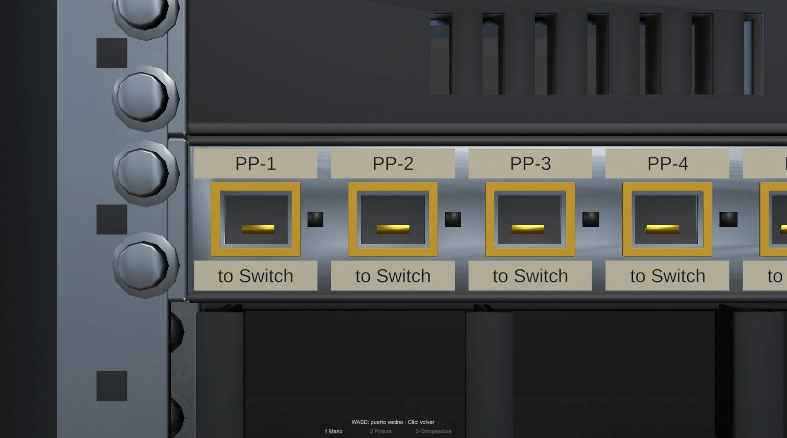
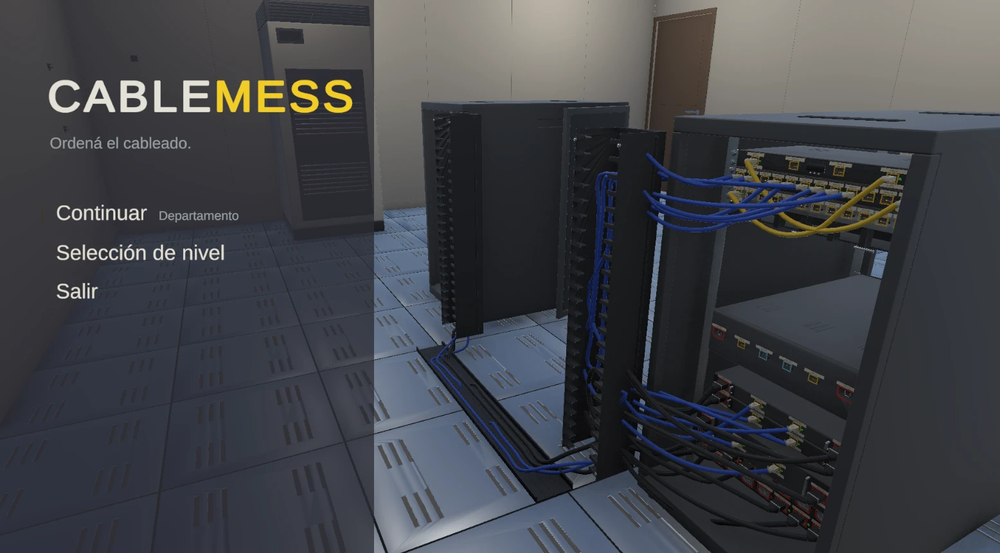
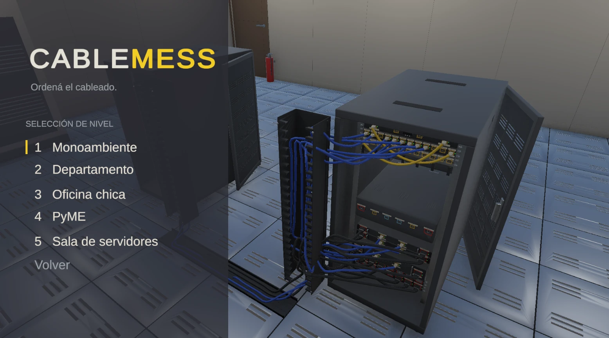
What I learnedQué aprendí
// TODO: what you learned and what you'd do differently
ProjectProyecto
TypeTipo
Puzzle · First personPuzle · Primera persona
EngineMotor
Unity 6.3 · URP
InputEntrada
Input System
LanguageLenguaje
C#
LevelsNiveles
5
StatusEstado
In developmentEn desarrollo
YearAño
2026
Editor Tool · Unity Asset StoreHerramienta de editor · Unity Asset Store
Visual FSM Graph Editor
A node-based state machine editor for Unity AI, published on the Asset Store.Un editor de máquinas de estados basado en nodos para IA en Unity, publicado en el Asset Store.
Drag the states around. Like the tool's Play-mode view, the active state lights up as the machine takes random transitions.Arrastra los estados. Igual que la vista en modo Play de la herramienta, el estado activo se ilumina a medida que la máquina toma transiciones al azar.
The problemEl problema
AI behaviors like patrol, chase and attack are naturally state machines, but written by hand they become a tangle of flags and switch statements. They are hard to read, hard to debug at runtime, and every new transition means touching code.Comportamientos de IA como patrullar, perseguir y atacar son máquinas de estados por naturaleza, pero escritos a mano terminan en un enredo de banderas y sentencias switch. Cuesta leerlos, cuesta depurarlos en ejecución y cada transición nueva implica tocar código.
What I builtQué construí
A complete, commercial Unity Editor tool for designing finite state machines visually. States and conditions are ScriptableObject assets wired together on a GraphView canvas, and the runtime has no dependency on the editor, so the same graphs run in builds. I took it from first commit to a published Asset Store product, including documentation, example scenes and post-release updates.Una herramienta comercial y completa para el Editor de Unity que permite diseñar máquinas de estados finitos de forma visual. Los estados y las condiciones son assets ScriptableObject conectados sobre un lienzo GraphView, y el runtime no depende del editor, así que los mismos grafos corren en las builds. La llevé desde el primer commit hasta un producto publicado en el Asset Store, con documentación, escenas de ejemplo y actualizaciones posteriores al lanzamiento.
How it worksCómo funciona
Runtime layerCapa de runtimeThe FSM, its states and conditions are ScriptableObjects. Each entity clones the FSM asset on Awake, so many entities can share one graph without sharing runtime state.La FSM, sus estados y sus condiciones son ScriptableObjects. Cada entidad clona el asset de la FSM en Awake, así muchas entidades pueden compartir un grafo sin compartir el estado en ejecución.
Editor layerCapa de editorA GraphView window edits a GUI model of the graph and only commits back to the assets on save or autosave, with full Undo support.Una ventana GraphView edita un modelo del grafo pensado para la interfaz y recién escribe en los assets al guardar o con el autoguardado, con soporte completo de Deshacer.
Live debuggingDepuración en vivoIn Play mode, selecting an entity loads its running FSM: the active state pulses and a trail marks the last few states visited.En modo Play, al seleccionar una entidad se carga su FSM en ejecución: el estado activo pulsa y un rastro marca los últimos estados visitados.
Logic gatesCompuertas lógicasAnd / Or / Negate conditions let designers build compound transitions from existing conditions without writing new code.Las condiciones And / Or / Negate permiten a los diseñadores armar transiciones compuestas a partir de condiciones existentes, sin escribir código nuevo.
Readable graphsGrafos legiblesReroute points, "Go To State" markers instead of canvas-wide wires, shared condition boxes, and direction arrows on every curve.Puntos de reroute, marcadores "Go To State" en lugar de cables que cruzan todo el lienzo, cajas de condición compartidas y flechas de dirección en cada curva.
Production polishAcabado de producciónDescriptive validation errors, a Preferences page, orphan-asset cleanup, URP and Built-in support, and a full PDF manual.Errores de validación descriptivos, una página de Preferencias, limpieza de assets huérfanos, soporte para URP y Built-in, y un manual completo en PDF.
Technical highlightsAspectos técnicos
The runtime loop is deliberately tiny: poll the current state's conditions in order, take the first one that passes, otherwise keep executing the state.El bucle de runtime es deliberadamente mínimo: se evalúan en orden las condiciones del estado actual, se toma la primera que se cumple y, si ninguna lo hace, se sigue ejecutando el estado.
MonarchFsm.cs · código traducido
public void RunStateMachine()
{
if (m_currentState == null) return;
for (var l_i = 0; l_i < m_currentStateConditionsAmount; l_i++)
{
if (!m_currentState.StateConditions[l_i].CompleteCondition(m_model))
continue;
ChangeState(m_currentState.ExitStates[l_i]);
return;
}
m_currentState.fsmState.ExecuteState(m_model);
}
public void EjecutarMaquinaDeEstados()
{
if (m_estadoActual == null) return;
for (var l_i = 0; l_i < m_cantidadCondicionesEstadoActual; l_i++)
{
if (!m_estadoActual.CondicionesDeEstado[l_i].CondicionCumplida(m_modelo))
continue;
CambiarEstado(m_estadoActual.EstadosDeSalida[l_i]);
return;
}
m_estadoActual.estadoFsm.EjecutarEstado(m_modelo);
}
GraphView edges don't show direction, so a custom edge samples its own bezier with De Casteljau's algorithm and draws an arrowhead at the true midpoint, following bends around reroute points.Las aristas de GraphView no muestran dirección, así que una arista propia muestrea su bézier con el algoritmo de De Casteljau y dibuja una punta de flecha en el punto medio real, siguiendo las curvas alrededor de los puntos de reroute.
FsmEdge.cs · código traducido
// Repeatedly lerp adjacent points until one remains, giving the curve's
// actual position (and, via two nearby samples, tangent) at parameter t.
private static Vector2 SampleBezier(Vector2[] p_points, float p_t)
{
var l_working = (Vector2[])p_points.Clone();
int l_count = l_working.Length;
while (l_count > 1)
{
for (int l_i = 0; l_i < l_count - 1; l_i++)
l_working[l_i] = Vector2.Lerp(l_working[l_i], l_working[l_i + 1], p_t);
l_count--;
}
return l_working[0];
}
// Interpola linealmente los puntos adyacentes una y otra vez hasta que queda uno,
// lo que da la posición real de la curva (y, con dos muestras cercanas, su tangente) en t.
private static Vector2 MuestrearBezier(Vector2[] p_puntos, float p_t)
{
var l_trabajo = (Vector2[])p_puntos.Clone();
int l_cantidad = l_trabajo.Length;
while (l_cantidad > 1)
{
for (int l_i = 0; l_i < l_cantidad - 1; l_i++)
l_trabajo[l_i] = Vector2.Lerp(l_trabajo[l_i], l_trabajo[l_i + 1], p_t);
l_cantidad--;
}
return l_trabajo[0];
}
MediaGalería
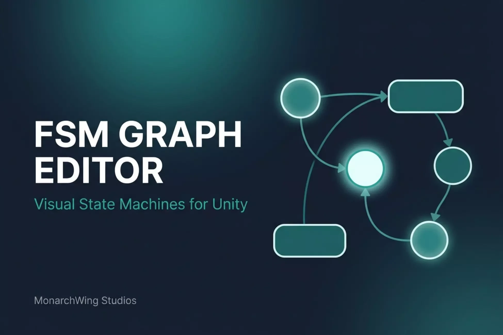
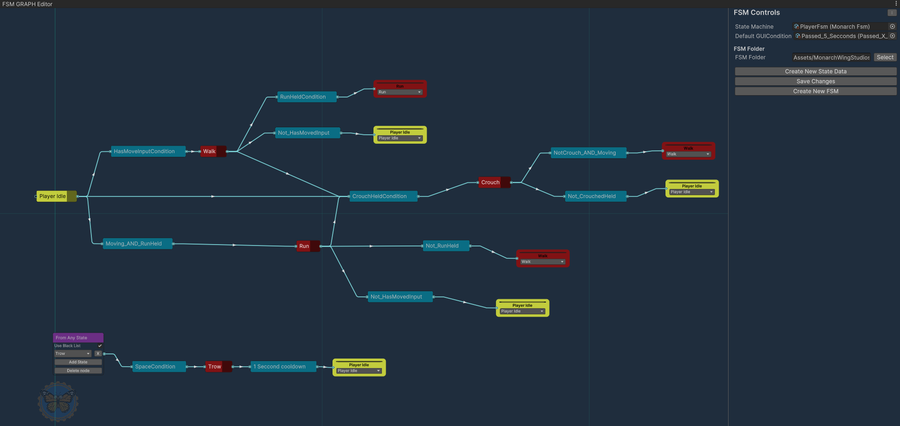
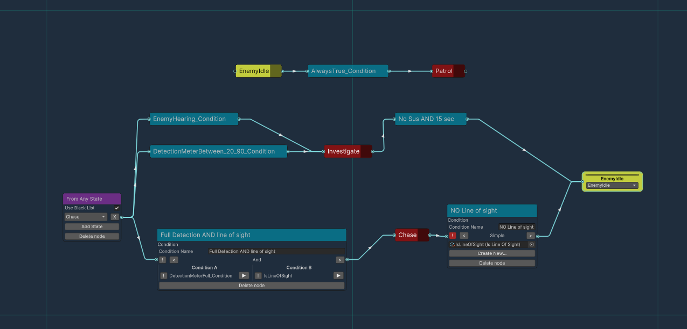
What I learnedQué aprendí
// TODO: what you learned and what you'd do differently
Sight and hearing for AI agents, in 2D and 3D.Vista y oído para agentes de IA, en 2D y 3D.
Try itPruébalo
AwarenessNivel de alertaUnaware
You're the dot (on a phone, drag a finger). The cone and the small inner circle are sight; moving fast inside the dashed circle makes noise. Linger and the confirm meter fills from Suspicious to Aware, just like the toolkit's timers.Tú eres el punto (en un teléfono, arrastra un dedo). El cono y el pequeño círculo interior son la vista; moverse rápido dentro del círculo punteado hace ruido. Si te quedas ahí, el medidor de confirmación se llena de Sospechoso a Alerta, igual que los temporizadores del toolkit.
The problemEl problema
Stealth and combat AI only feel fair when enemies react to what they could plausibly see and hear, and give the player a moment of warning before they commit. A raw "is the player in range" check gives neither.La IA de sigilo y de combate solo se siente justa cuando los enemigos reaccionan a lo que podrían ver y oír de forma verosímil, y le dan al jugador un instante de aviso antes de actuar. Una simple comprobación de «el jugador está en rango» no da ninguna de las dos cosas.
What I builtQué construí
A modular perception package: drop-in sense components (2D field of view, 3D field of view, hearing) that each track their own awareness, plus an agent component that aggregates every sense into one state an FSM or behavior tree can react to through C# or UnityEvents.Un paquete de percepción modular: componentes de sentidos listos para usar (campo de visión 2D, campo de visión 3D, oído) que llevan cada uno su propio nivel de alerta, más un componente de agente que reúne todos los sentidos en un único estado al que una FSM o un árbol de comportamiento puede reaccionar mediante C# o UnityEvents.
How it worksCómo funciona
VisionVisiónA view cone with range and angle, plus an omnidirectional inner radius that detects instantly. Candidates come from a non-allocating overlap query, then a raycast checks line of sight against an obstacle mask.Un cono de visión con alcance y ángulo, más un radio interior omnidireccional que detecta al instante. Los candidatos salen de una consulta de solapamiento sin asignaciones de memoria y luego un raycast verifica la línea de visión contra una máscara de obstáculos.
HearingOídoNoise emitters and noise zones broadcast events. Each listener applies distance falloff, ignores anything below an audible threshold and remembers the last noise briefly.Los emisores y las zonas de ruido difunden eventos. Cada oyente aplica una atenuación por distancia, ignora todo lo que esté por debajo de un umbral audible y recuerda el último ruido por un momento.
AwarenessNivel de alertaUnaware → Suspicious → Aware. A target must be detected for a confirm time before it's spotted, and a lose timer keeps agents from forgetting instantly.Desprevenido → Sospechoso → Alerta. Un objetivo debe ser detectado durante un tiempo de confirmación antes de ser avistado, y un temporizador de pérdida evita que los agentes se olviden al instante.
Editor toolingHerramientas de editorCustom Scene-view handles to drag the cone's angle and radii, and gizmos tinted by the current awareness level.Handles propios en la vista de Escena para arrastrar el ángulo y los radios del cono, y gizmos teñidos según el nivel de alerta actual.
Technical highlightsAspectos técnicos
Every sense shares the same detection tick, so awareness behaves consistently whether it came from sight or sound. Detection runs on an interval rather than every frame.Todos los sentidos comparten el mismo tick de detección, por lo que la alerta se comporta igual venga de la vista o del oído. La detección corre a intervalos y no en cada frame.
A long-range rifle simulator built on real external ballistics, not hitscan.Un simulador de rifle de largo alcance basado en balística externa real, no en hitscan.
Try itPruébalo
RangeDistancia
DropCaída
ElevationElevación
Wind driftDeriva por viento
WindageCorrección lateral
TimeTiempo
VelocityVelocidad
A .308 175 gr bullet using RealShooter's own G7 drag table, form-factor formula and RK4 integrator, ported to JavaScript. Turret corrections are in 0.1 mil clicks. Simplified: standard atmosphere, no Coriolis or spin drift.Una bala .308 de 175 gr que usa la tabla de arrastre G7, la fórmula de factor de forma y el integrador RK4 del propio RealShooter, portados a JavaScript. Las correcciones de torreta están en clics de 0,1 mil. Simplificado: atmósfera estándar, sin Coriolis ni deriva por giro.
The problemEl problema
Most shooters fake bullets with a raycast or a simple projectile. At 600 m and beyond that falls apart: real bullets slow down along a Mach-dependent drag curve, drift with the wind, and even feel the Earth's rotation. Unity's PhysX can't represent any of that.La mayoría de los shooters simulan las balas con un raycast o con un proyectil simple. A 600 m o más eso se cae a pedazos: las balas reales se frenan siguiendo una curva de arrastre que depende del número de Mach, se desvían con el viento e incluso sienten la rotación de la Tierra. El PhysX de Unity no puede representar nada de eso.
What I builtQué construí
A custom ballistics simulation with physically based drag, wind, Coriolis and spin drift, driven by real ammunition data, plus a scoped rifle whose elevation and windage turrets click in 0.1 mil steps like the real thing.Una simulación balística propia con arrastre basado en física, viento, Coriolis y deriva por giro, alimentada con datos reales de munición, más un rifle con mira cuyas torretas de elevación y deriva avanzan en clics de 0,1 mil como las reales.
How it worksCómo funciona
Real drag dataDatos de arrastre realesStandard G1/G7 Mach→Cd tables, scaled by each bullet's form factor (sectional density / BC), so published ballistic coefficients plug straight in.Tablas estándar G1/G7 de Mach→Cd, escaladas por el factor de forma de cada bala (densidad seccional / BC), así los coeficientes balísticos publicados se usan tal cual.
RK4 integrationIntegración RK4Projectiles are plain C# objects integrated with Runge-Kutta 4 and substeps in FixedUpdate, with gravity, drag and Coriolis as continuous forces.Los proyectiles son objetos C# simples integrados con Runge-Kutta 4 y subpasos en FixedUpdate, con la gravedad, el arrastre y Coriolis como fuerzas continuas.
AtmosphereAtmósferaA weather system derives air density and speed of sound from temperature, pressure and humidity; gravity varies with latitude and altitude.Un sistema de clima calcula la densidad del aire y la velocidad del sonido a partir de la temperatura, la presión y la humedad; la gravedad varía con la latitud y la altitud.
Spin driftDeriva por giroMiller's gyroscopic stability factor and Litz's spin-drift formula, with a warning when a barrel's twist rate can't stabilize the bullet.El factor de estabilidad giroscópica de Miller y la fórmula de deriva por giro de Litz, con una advertencia cuando el paso de rayado del cañón no alcanza para estabilizar la bala.
No tunnelingSin tunnelingEach substep sweeps a raycast from the previous position, so fast bullets can't skip through thin targets.Cada subpaso barre un raycast desde la posición anterior, así las balas rápidas no atraviesan objetivos delgados sin chocar.
Test range toolingCampo de pruebasOne menu command rebuilds a test scene with targets at 100, 300, 600 and 900 m, fully wired.Un comando de menú reconstruye una escena de prueba con blancos a 100, 300, 600 y 900 m, ya totalmente conectados.
Technical highlightsAspectos técnicos
One RK4 step over (position, velocity). Every acceleration evaluation samples drag at the current Mach number, gravity and Coriolis; spin drift is applied afterwards as an empirical correction so it isn't double-counted with a Magnus force.Un paso RK4 sobre (posición, velocidad). Cada evaluación de la aceleración muestrea el arrastre al número de Mach actual, la gravedad y Coriolis; la deriva por giro se aplica después como corrección empírica para no contarla dos veces con una fuerza de Magnus.
Planes that learn to fly through evolution, with no training data and no backpropagation.Aviones que aprenden a volar por evolución, sin datos de entrenamiento y sin retropropagación.
Try itPruébalo
GenerationGeneración1AliveVivos0BestMejor0
A 2D version of the same idea: 40 planes, each flown by its own small network (5 rays + heading → 6 → steering). Nobody tells them how to fly. After each generation the elite survive and the rest are bred with tournament selection, crossover and mutation.Una versión 2D de la misma idea: 40 aviones, cada uno pilotado por su propia red pequeña (5 rayos + rumbo → 6 → dirección). Nadie les dice cómo volar. Después de cada generación sobrevive la élite y el resto se cría con selección por torneo, cruce y mutación.
The problemEl problema
Hand-tuning a flight controller to dodge obstacles and hit checkpoints is brittle. Could a population of planes discover how to fly the course on their own, just by being rewarded for getting further?Ajustar a mano un controlador de vuelo para esquivar obstáculos y pasar por los checkpoints es frágil. ¿Podría una población de aviones descubrir por sí sola cómo recorrer el circuito, solo recibiendo una recompensa por llegar más lejos?
What I builtQué construí
A neuroevolution sandbox written from scratch in plain C#: a feedforward neural network and a genetic algorithm, with no ML libraries. Fifty planes fly at once; when the whole generation has crashed or timed out, the best brains are bred into the next one.Un sandbox de neuroevolución escrito desde cero en C# puro: una red neuronal feedforward y un algoritmo genético, sin librerías de ML. Cincuenta aviones vuelan a la vez; cuando toda la generación se estrelló o se quedó sin tiempo, los mejores cerebros se cruzan para formar la siguiente.
How it worksCómo funciona
SensorsSensores14 inputs: 8 obstacle rays across a 120° view, the local direction to the next ring, speed, bank and pitch.14 entradas: 8 rayos de obstáculos en un campo de 120°, la dirección local hacia el siguiente aro, la velocidad, el alabeo y el cabeceo.
BrainCerebroA 14 → 16 → 8 → 5 tanh network outputs throttle, brake, pitch, roll and yaw every physics step.Una red tanh de 14 → 16 → 8 → 5 produce en cada paso de física el acelerador, el freno, el cabeceo, el alabeo y la guiñada.
FitnessFitnessDistance flown, plus a bonus for every checkpoint ring passed in order. Crashing or dropping too low ends the episode.La distancia recorrida, más una bonificación por cada aro de checkpoint cruzado en orden. Chocar o bajar demasiado termina el episodio.
EvolutionEvoluciónElitism keeps the top 4 untouched; the rest come from tournament selection, uniform crossover and 5% mutation.El elitismo conserva intactos a los 4 mejores; el resto sale de selección por torneo, cruce uniforme y 5 % de mutación.
ArchitectureArquitecturaClean Model / View / Controller split, hyperparameters in a ScriptableObject, and editor scripts that build the test scene.Separación limpia en Modelo / Vista / Controlador, hiperparámetros en un ScriptableObject y scripts de editor que arman la escena de prueba.
Technical highlightsAspectos técnicos
The whole genetic algorithm fits on one screen and is pure C#, so it's independent of Unity and easy to test.Todo el algoritmo genético entra en una pantalla y es C# puro, así que no depende de Unity y es fácil de testear.
GeneticAlgorithm.cs · código traducido
// Elitism + tournament selection + uniform crossover + mutation.
public static List<NeuralNetwork> Evolve(List<PlaneGenome> genomes, TrainingConfig config)
{
List<PlaneGenome> ranked = genomes.OrderByDescending(g => g.Fitness).ToList();
var nextGeneration = new List<NeuralNetwork>(config.populationSize);
int eliteCount = Mathf.Min(config.elitismCount, ranked.Count);
for (int i = 0; i < eliteCount; i++)
nextGeneration.Add(ranked[i].Brain.Clone());
while (nextGeneration.Count < config.populationSize)
{
NeuralNetwork parentA = TournamentSelect(ranked, config.tournamentSize);
NeuralNetwork parentB = TournamentSelect(ranked, config.tournamentSize);
NeuralNetwork child = NeuralNetwork.Crossover(parentA, parentB);
child.Mutate(config.mutationRate, config.mutationStrength);
nextGeneration.Add(child);
}
return nextGeneration;
}
// Elitismo + selección por torneo + cruce uniforme + mutación.
public static List<RedNeuronal> Evolucionar(List<GenomaAvion> genomas, ConfigEntrenamiento config)
{
List<GenomaAvion> clasificados = genomas.OrderByDescending(g => g.Aptitud).ToList();
var siguienteGeneracion = new List<RedNeuronal>(config.tamanoPoblacion);
int cantidadElite = Mathf.Min(config.cantidadElitismo, clasificados.Count);
for (int i = 0; i < cantidadElite; i++)
siguienteGeneracion.Add(clasificados[i].Cerebro.Clonar());
while (siguienteGeneracion.Count < config.tamanoPoblacion)
{
RedNeuronal padreA = SeleccionPorTorneo(clasificados, config.tamanoTorneo);
RedNeuronal padreB = SeleccionPorTorneo(clasificados, config.tamanoTorneo);
RedNeuronal hijo = RedNeuronal.Cruzar(padreA, padreB);
hijo.Mutar(config.tasaMutacion, config.intensidadMutacion);
siguienteGeneracion.Add(hijo);
}
return siguienteGeneracion;
}
MediaGalería
None (Texture2D)
None (Texture2D)
None (Texture2D)
What I learnedQué aprendí
// TODO: what you learned and what you'd do differently
ProjectProyecto
TypeTipo
NeuroevolutionNeuroevolución
EngineMotor
Unity 6
LanguageLenguaje
C# (no ML libs)C# (sin librerías de ML)
NetworkRed
14 → 16 → 8 → 5
PopulationPoblación
50 planes50 aviones
Game · Roguelike · Team projectJuego · Roguelike · Proyecto en equipo
Wizard's Nightmare
A roguelike we built and shipped as our final-year thesis project. Free to play.Un roguelike que construimos y publicamos como proyecto de tesis de último año. Gratis.
Our final-year thesis: design, build and ship a complete roguelike as a team of four in about eight months, with procedurally assembled rooms, a roster of enemies and bosses, and upgrades and progression between runs.Nuestra tesis de último año: diseñar, construir y publicar un roguelike completo en un equipo de cuatro en unos ocho meses, con salas armadas proceduralmente, un elenco de enemigos y jefes, y mejoras y progresión entre partidas.
What I builtQué construí
I was the team's most active contributor, focused on enemy AI and the game's core architecture: the state machine every enemy and boss runs on, pathfinding and movement, and the service layer the rest of the game's systems plug into. I also worked on the player, UI, stats and the upgrade system.Fui el integrante más activo del equipo, con foco en la IA de los enemigos y en la arquitectura central del juego: la máquina de estados sobre la que corren todos los enemigos y jefes, el pathfinding y el movimiento, y la capa de servicios a la que se conectan el resto de los sistemas. También trabajé en el jugador, la interfaz, las estadísticas y el sistema de mejoras.
How it worksCómo funciona
Enemy FSMFSM de enemigosEnemies and bosses are built from reusable states and conditions: chase, charge, intercept, teleport around the target, stun, spawn minions, special-attack pools and multi-phase boss logic.Enemigos y jefes se arman con estados y condiciones reutilizables: perseguir, embestir, interceptar, teletransportarse alrededor del objetivo, aturdir, invocar esbirros, repertorios de ataques especiales y lógica de jefes con varias fases.
Theta* pathfindingPathfinding Theta*Any-angle pathfinding, so enemies take straight, natural routes through rooms instead of zig-zagging along grid cells.Pathfinding de cualquier ángulo, así los enemigos toman rutas rectas y naturales por las salas en lugar de zigzaguear por las celdas de la grilla.
Steering behavioursSteering behavioursChase, flee and evade steering for smooth movement once a path is known.Dirección de persecución, huida y evasión para un movimiento fluido una vez que se conoce el camino.
Service LocatorService LocatorEvents, stats, currency, inventory and upgrade pools are registered against interfaces and lazily created on first use, keeping systems decoupled from each other.Eventos, estadísticas, moneda, inventario y pools de mejoras se registran contra interfaces y se crean de forma perezosa en el primer uso, manteniendo los sistemas desacoplados entre sí.
Technical highlightsAspectos técnicos
Services are registered once at startup, before any scene loads, and created only when first requested.Los servicios se registran una sola vez al arrancar, antes de que cargue cualquier escena, y se crean recién cuando alguien los pide por primera vez.
ServiceLocator.cs · código traducido
[RuntimeInitializeOnLoadMethod(RuntimeInitializeLoadType.AfterAssembliesLoaded)]
public static void DefineServices()
{
Register<IEventService, EventService>();
Register<IPersistenceService, LocalPersistenceService>();
Register<IUserDataService, UserDataService>();
Register<IStatsService, StatsService>();
Register<ICurrencyService, CurrencyService>();
Register<IInventoryService, InventoryService>();
Register<IUpgradePoolService, UpgradePoolService>(true);
Register<ISpawnItemsService, SpawnItemsService>(true);
}
public static T Get<T>() where T : IGameService
{
return (T)Get(typeof(T));
}
private static IGameService Get(Type p_type)
{
return m_serviceInstances.TryGetValue(p_type, out var l_instance)
? l_instance
: InitializeService(p_type);
}
[RuntimeInitializeOnLoadMethod(RuntimeInitializeLoadType.AfterAssembliesLoaded)]
public static void DefinirServicios()
{
Registrar<IServicioEventos, ServicioEventos>();
Registrar<IServicioPersistencia, ServicioPersistenciaLocal>();
Registrar<IServicioDatosUsuario, ServicioDatosUsuario>();
Registrar<IServicioEstadisticas, ServicioEstadisticas>();
Registrar<IServicioMoneda, ServicioMoneda>();
Registrar<IServicioInventario, ServicioInventario>();
Registrar<IServicioPoolMejoras, ServicioPoolMejoras>(true);
Registrar<IServicioGeneracionObjetos, ServicioGeneracionObjetos>(true);
}
public static T Obtener<T>() where T : IServicioJuego
{
return (T)Obtener(typeof(T));
}
private static IServicioJuego Obtener(Type p_tipo)
{
return m_instanciasServicios.TryGetValue(p_tipo, out var l_instancia)
? l_instancia
: InicializarServicio(p_tipo);
}
MediaGalería
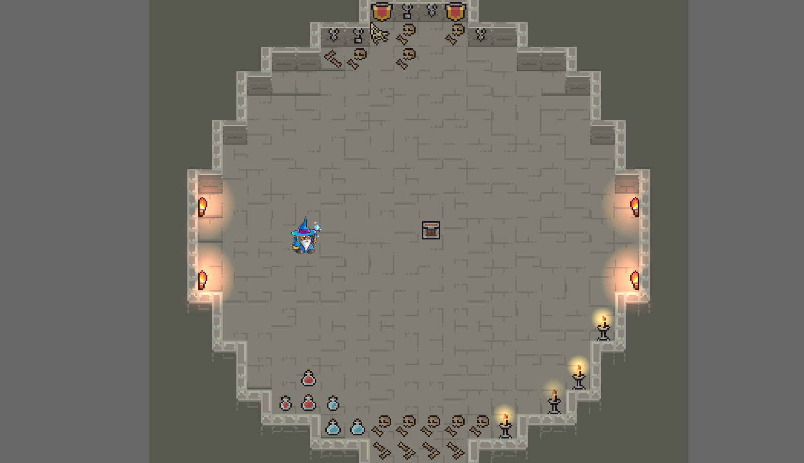
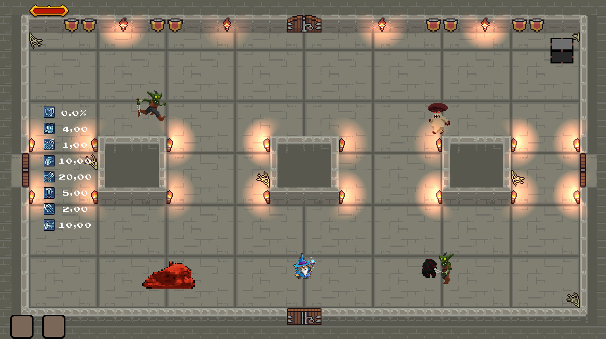
What I learnedQué aprendí
// TODO: what you learned and what you'd do differently
ProjectProyecto
TypeTipo
GameJuego
GenreGénero
Roguelike
EngineMotor
Unity 2022.3 · URP
TeamEquipo
4 people4 personas
My focusMi foco
Enemy AI, architectureIA de enemigos, arquitectura
Editor Tool · Unity 6Herramienta de editor · Unity 6
SO Factory
Create any ScriptableObject in your project in one click.Crea cualquier ScriptableObject de tu proyecto con un clic.
The problemEl problema
Data-driven Unity projects pile up ScriptableObject types, and creating them means a [CreateAssetMenu] attribute on every class, then digging through nested menus and moving each new asset to the right folder.Los proyectos de Unity orientados a datos acumulan tipos de ScriptableObject, y crearlos implica poner un atributo [CreateAssetMenu] en cada clase, buscar entre menús anidados y mover cada asset nuevo a la carpeta correcta.
What I builtQué construí
An Editor window that discovers every ScriptableObject type in the project automatically and creates an asset of it in one click, straight into the right folder. It also ships inside the Visual FSM Graph Editor, where it's used to create states and conditions quickly.Una ventana de Editor que descubre automáticamente todos los tipos de ScriptableObject del proyecto y crea un asset de cualquiera de ellos con un clic, directo en la carpeta correcta. También viene incluida en el Visual FSM Graph Editor, donde se usa para crear estados y condiciones rápidamente.
How it worksCómo funciona
Type discoveryDescubrimiento de tiposScans TypeCache for concrete ScriptableObject types, filtering out Unity's own types and editor windows and inspectors.Recorre TypeCache en busca de tipos concretos de ScriptableObject, filtrando los tipos propios de Unity y las ventanas e inspectores de editor.
Fast to useRápida de usarTypes grouped by namespace, live search, full keyboard navigation and an Alt+O shortcut.Tipos agrupados por namespace, búsqueda en vivo, navegación completa con teclado y un atajo Alt+O.
Per-type defaultsValores por tipoHide types or give each one a default folder, right from a row's context menu. Settings are saved as JSON in ProjectSettings so the whole team shares them.Oculta tipos o asígnale a cada uno una carpeta por defecto, directo desde el menú contextual de una fila. La configuración se guarda como JSON en ProjectSettings para que todo el equipo la comparta.
Native feelAspecto nativoA Preferences page with reorderable lists and a searchable type picker built on Unity's own AdvancedDropdown.Una página de Preferencias con listas reordenables y un selector de tipos con búsqueda, construido sobre el AdvancedDropdown de Unity.
Technical highlightsAspectos técnicos
Discovery is a single TypeCache query, and folder paths returned by the native picker are force-imported, so assets can be created in a folder the user only just made.El descubrimiento es una sola consulta a TypeCache, y las rutas de carpeta que devuelve el selector nativo se importan a la fuerza, así que se pueden crear assets en una carpeta que el usuario acaba de crear.
ScriptableObjectTypeUtil.cs · código traducido
public static List<Type> GetAllProjectScriptableObjectTypes()
{
return TypeCache.GetTypesDerivedFrom<ScriptableObject>()
.Where(t => !t.IsAbstract && !t.IsGenericType && IsProjectType(t) && IsAssetWorthy(t))
.OrderBy(t => t.Name)
.ToList();
}
// A folder made with the native picker's "New Folder" button exists on disk but
// not yet in the AssetDatabase, so creating an asset there would fail.
public static string ToProjectRelativePath(string p_absoluteFolderPath)
{
if (string.IsNullOrEmpty(p_absoluteFolderPath) || !p_absoluteFolderPath.Contains(Application.dataPath))
return null;
string l_relative = "Assets" + p_absoluteFolderPath.Replace(Application.dataPath, "");
AssetDatabase.ImportAsset(l_relative, ImportAssetOptions.ForceSynchronousImport);
return l_relative;
}
public static List<Type> ObtenerTodosLosTiposDeScriptableObjectDelProyecto()
{
return TypeCache.GetTypesDerivedFrom<ScriptableObject>()
.Where(t => !t.IsAbstract && !t.IsGenericType && EsTipoDelProyecto(t) && ValeLaPenaComoAsset(t))
.OrderBy(t => t.Name)
.ToList();
}
// Una carpeta creada con el botón de nueva carpeta del selector nativo existe en disco pero
// todavía no en el AssetDatabase, así que crear un asset ahí fallaría.
public static string ARutaRelativaAlProyecto(string p_rutaAbsolutaCarpeta)
{
if (string.IsNullOrEmpty(p_rutaAbsolutaCarpeta) || !p_rutaAbsolutaCarpeta.Contains(Application.dataPath))
return null;
string l_relativa = "Assets" + p_rutaAbsolutaCarpeta.Replace(Application.dataPath, "");
AssetDatabase.ImportAsset(l_relativa, ImportAssetOptions.ForceSynchronousImport);
return l_relativa;
}
MediaGalería
None (Texture2D)
None (Texture2D)
None (Texture2D)
What I learnedQué aprendí
// TODO: what you learned and what you'd do differently